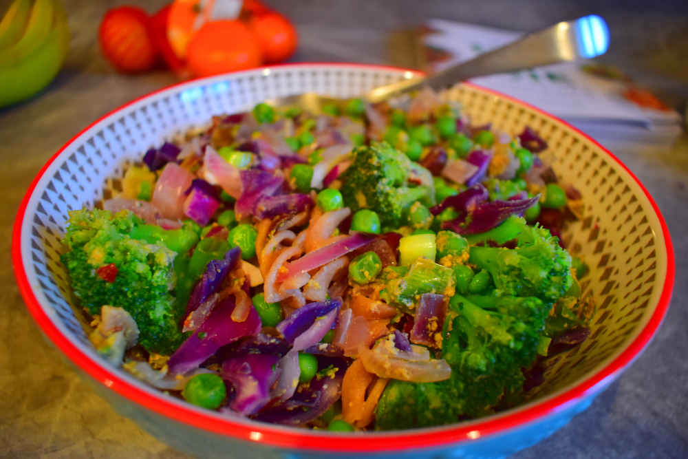
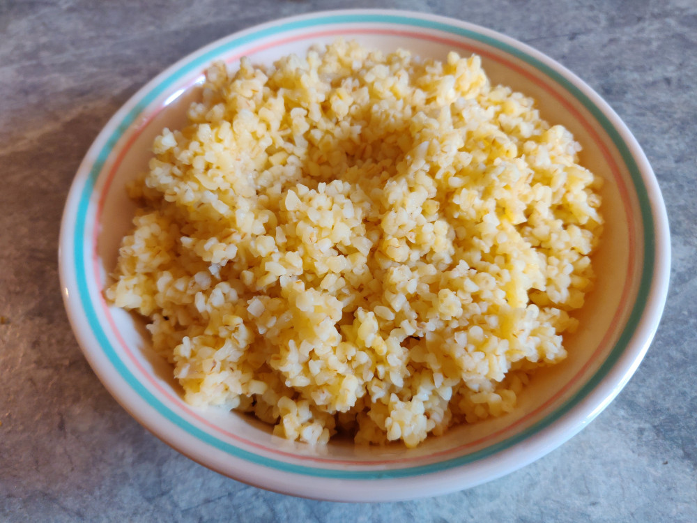

Cookbook
This book comprises of cooking recipes. The recipes are vegan and follow a whole-food, plant-based diet. They are based, or otherwise inspired by, recipes from the following sources:
Additional nutritional information was retrieved from:
Many recipes are simply my preferential alterations on recipes mentioned in these books. I can vouch for each recipe I've included, since I wanted to write them up in a more digestable form that I could continually refer back to. They're tasty, relatively easy to make, but most importantly they are simple.
General Advice
- Try to eat legumes with every meal.
- When shopping for whole grains, try to minimise the ratio of carbohydrates to dietary fibre. The Five-to-One rule states that, per 100g, there should not be more than five times as many carbohydrates as there is fibre, though this is difficult to achieve in practice. Whole grains that achieve less than a ten-to-one ratio, whilst not as good, are still worth purchasing.
Food Groups
Servings per day should be considered a recommended minimum provided that you do not eat when you are not hungry. The one exception is Herbs & spices, of which stronger spices can be harmful if consumed in excess. Always use sound judgement when deciding to eat more than a typical amount.
| Group | Serving size | Servings per day | Foods |
|---|---|---|---|
| 🥔Legumes | 130g cooked | 🥔🥔🥔 | Chick peas Red lentils Black beans Kidney beans Pinto beans |
| 🍞Whole grains | 50g cold 100g cooked | 🍞🍞🍞 | Oats Quinoa Whole wheat pasta Brown rice |
| 🥬Greens | 60g raw 90g cooked | 🥬🥬 | Spinach Kale |
| 🥦Cruciferous vegetables | 80g | 🥦 | Broccoli Cauliflower Brussels sprouts Cabbage Pak choi |
| 🥕Root vegetables | 60g | 🥕🥕 | Sweet potatoes Tomatoes Beetroot Carrots Onions Peppers |
| 🍄Mushrooms | 20g | 🍄 | Mushrooms |
| 🍓Berries | 60g | 🍓 | Blueberries Strawberries Blackberries Raspberries Cranberries Goji berries |
| 🍊Fruit | 1 medium fruit 40g dried | 🍊🍊🍊 | Dates Figs Apricots Apples Oranges Pomergranates Bananas |
| 🌿Herbs & spices | ½ tsp powdered 1 tsp fresh | 🌿 | Turmeric Garlic Ginger Corriander Cumin |
| 🥜Nuts & seeds | 30g | 🥜 | Walnuts Almonds Chia seeds Pumpkin seeds Sesame seeds |
| 🍂Flaxseeds | 1 tbsp | 🍂 | Ground flaxseeds |
Breakfasts
Fruit Smoothie
⏲ 10 minutes | 👤 1 serving
🥬Greens 🍓Berries 🍊Fruit 🌿Herbs & spices 🍂Flaxseeds
Ingredients
| Fresh | Frozen | Pantry |
|---|---|---|
| Spinach (90g) | Berries (60g) | Ground flaxseeds (1 tbsp) |
| Banana (1, medium) | Milk (60ml) | |
| Turmeric (¼ tsp) |
Steps
- Slice the banana and add it to a high-speed blender
- Add the berries, spinach, milk, flaxseeds and turmeric
- Blend until the smoothie is at the desired thickness
Summertime Oatmeal
⏲ 10 minutes prior day, 5 minutes just before eating | 👤 2 servings
🍞Whole grains 🍓Berries 🍊Fruit 🌿Herbs & spices 🥜Nuts & seeds 🍂Flaxseeds
Ingredients
| Fresh | Condiments | Pantry |
|---|---|---|
| Berries (120g) | Date Syrup (2 tbsp) | Oats (100g) |
| Chia seeds (2 tbsp) | ||
| Ground flaxseeds (2 tbsp) | ||
| Ground cinnamon (½ tsp) | ||
| Milk (450ml) |
Steps
- To a mixing bowl, add all the ingredients except the berries and mix well
- Split the mixture evenly among two small bowls
- Refrigerate overnight
- Just before eating, add the berries
Mains
These are complete meals that one would typically eat for lunch or dinner. They are all comprised of at least one type of legume, whole grain, and vegetable.
Feel free to substitute the fresh ingredients with whatever you may have, especially if they are part of the same food group. For example, in the Sweet Potato Hash recipe, you can substitute the one sweet potato for two or three carrots without any other changes to the recipe. Both are root vegetables and, whilst sweet potatoes are the healthier of the two, both have similar nutritional profiles.
Lentil Bolognese Spaghetti
⏲ 40 minutes | 👤 4 servings
🥔Legumes 🍞Whole grains 🥕Root vegetables 🍄Mushrooms 🌿Herbs & spices 🥜Nuts & seeds
Ingredients
100g of cooked lentils is a prerequisite, or the lentils can be substituted for chickpeas
| Fresh | Condiments | Pantry |
|---|---|---|
| Tomatoes (4, large) | Tomato pureé (50g) | Whole grain spaghetti (225g) |
| Mushrooms (200g) | Date Syrup (½ tsp) | Yeast flakes (2 tbsp) |
| White miso paste (1 tbsp) | Garlic (3, cloves) | |
| Nutty Parm (1 tsp) | Onion (1, medium) | |
| Dried basil (1½ tsp) | ||
| Dried oregano (1 tsp) | ||
| Dried chilli flakes (½ tsp) |
Steps
- Pulverise tomatoes and separate juices and pulp
- Finely chop onion, garlic and mushrooms
- Boil 1½ litres of water
- Set a large frying pan over medium heat
- Add pulverised tomato juice, onion and garlic to large frying pan
- Cook for 5 minutes and stir occasionally
- Add mushrooms to large frying pan
- Cook for 2 minutes
- Add tomato pureé, miso, yeast flakes and date syrup
- Add basil, oregano and chilli flakes
- Add 250 millilitres of cool water
- Add tomato pulps and lentils
- Simmer for 15 minutes and stir frequently
- To a large saucepan, add boiled water and spaghetti and stir occasionally
- Keep frying pan warm over low heat if spaghetti is delayed
- Spoon spaghetti onto a plate and spoon the hot bolegnese on top
- Sprinkle with Nutty Parm
Sweet Potato Hash
⏲ 60 minutes | 👤 4 servings
🥔Legumes 🍞Whole grains 🥦Cruciferous vegetables
🥕Root vegetables 🍄Mushrooms 🌿Herbs & spices
Ingredients
400g of cooked bulgur wheat and 400g of cooked beans are prerequisites
| Fresh | Condiments | Pantry |
|---|---|---|
| Sweet potato (1, medium) | Umami Sauce | Onion (1, small) |
| Cauliflower (650g) | Savoury Spice Blend | |
| Red Pepper (1, medium) | Dried chilli flakes (¼ tsp) | |
| Mushrooms (250g) |
Steps
- Preheat oven to 220° celcius
- Chop the sweet potato and place it on a baking sheet lined with baking parchment
- Once the oven is at 220°, place the baking sheet into the oven and cook for 10 minutes
- Whilst the sweet potato is cooking, chop the cauliflower
- After the sweet potato has cooked for 10 minutes, remove the baking sheet from the oven
- Place the cauliflower onto the baking sheet and put the baking sheet back into the oven
- Cook the baking sheet contents for 20 minutes
- Whilst the sweet potato and cauliflower are cooking, chop the onion
- After the sheet contents has cooked for 10 minutes, set a large frying pan over medium heat
- Add 2 tablespoons of water and the onion to the frying pan, cover, and cook for 5 minutes
- Chop the mushrooms and pepper
- After 5 minutes, add the mushrooms and pepper and cook, uncovered, for 5 more minutes
- Stir the pan contents regularly
- After 5 more minutes, add the beans, Savoury Spice Blend, cayenne pepper and bulgur wheat
- Remove the roasted vegetables from the oven and place them into the frying pan
- Cook for 5 more minutes
- Drizzle the pan contents with Umami Sauce
Vegetable Unfried Quinoa
⏲ 30 minutes | 👤 4 servings
🥔Legumes 🍞Whole grains 🥦Cruciferous vegetables
🥕Root vegetables 🌿Herbs & spices 🥜Nuts & seeds

Ingredients
400g of cooked quinoa is a prerequisite
| Fresh | Condiments | Pantry |
|---|---|---|
| Carrot (1, large) | Tahini (1 tbsp) | Rice vinegar (1 tsp) |
| Broccoli (half head) | White miso paste (1 tsp) | Dried chilli flakes (½ tsp) |
| Spring onions (3) | Onion (1, medium) | |
| Peas (150g) | Garlic (3, cloves) | |
| Ginger (2cm) |
Steps
Yellow Rice with Beans & Broccoli
⏲ 80 minutes | 👤 4 servings
🥔Legumes 🍞Whole grains 🥦Cruciferous vegetables 🥕Root vegetables 🌿Herbs & spices
Ingredients
100g of cooked beans is a prerequisite
| Fresh | Condiments | Pantry |
|---|---|---|
| Broccoli (400g) | White miso paste (2 tsp) | Onion (1, large) |
| Vegetable Broth (600ml) | Ginger (2cm) | |
| Yeast flakes (2 tbsp) | ||
| Ground turmeric (¼ tsp) | ||
| Ground coriander (½ tsp) | ||
| Ground cumin (¼ tsp) | ||
| Cayenne pepper (¼ tsp) | ||
| Brown rice (250g) |
Steps
- Finely chop the onion and ginger
- Set a large saucepan over medium-high heat
- Add 2 tablespoons of water
- Add the onion and ginger and cook for 1 minute
- Add the miso paste, yeast flakes, turmeric, coriander, cumin, cayenne pepper and rice
- Add the Vegetable Broth and bring to a boil
- Lower the heat, cover, and cook for 40 minutes, stiring occasionally
- Add the broccoli
- Add more broth if necessary
- Cook for 10 more minutes or until the liquid is absorbed
- Add the beans and cook for 3 more minutes
Sides
Cabbage Sauté
⏲ 25 minutes | 👤 4 servings
🥦Cruciferous vegetables 🥕Root vegetables 🍄Mushrooms 🌿Herbs & spices
Ingredients
| Fresh | Condiments | Pantry |
|---|---|---|
| Cabbage (600g) | Vegetable Broth (60ml) | Onion (1, medium) |
| Mushrooms (200g) | Umami Sauce (3 tbsp) | Dried thyme (1 tsp) |
| Ground black pepper (¼ tsp) |
Steps
- Shred the cabbage
- Finely chop the onion
- Chop the mushrooms
- Set a frying over medium heat
- Add the broth
- Add the onion and cabbage and cook for 4 minutes, stiring frequently
- Add the mushrooms and the thyme and cook for 4 more minutes, stiring frequently
- Add the Umami Sauce on top to coat
- Remove from heat and add the black pepper
Sweet & Savoury Flatbread
⏲ 60 minutes | 👤 2 servings
🍞Whole grains 🍊Fruit 🌿Herbs & spices 🥜Nuts & seeds
Ingredients
| Pantry |
|---|
| Wholemeal flour (150g) |
| Celery seeds (4 tsp) |
| Dried cranberries (160g) |
| Dried thyme (2 tsp) |
| Coconut oil (8 tsp) |
Steps
- To a mixing bowl, add flour and 50 millilitres of cold water
- Combine the flower with the water until all the water is soaked up
- Kneed the resultant dough for 5 minutes
- Shape the dough into a flattened ball, put it in a bowl, and refrigerate for 10 minutes
- Chop cranberries into small pieces
- After dough has been cooled, separate it into two pieces
- Roll the first dough ball on a rolling board, flip it, fold it and repeat for 3 minutes
- Flatten dough and rub 1 teaspoon of the oil on the middle of one side
- Add 1 teaspoon celery seeds to the oiled side
- Add 40 grams of cranberries and ½ teaspoon of thyme to the oiled side
- Set a skillet on high heat
- Roll dough, flip it, fold it and repeat for 2 minutes
- Flatten dough until it is thin and shape it as desired
- Put flattened dough on the skillet and flip it after 30 seconds
- Add 1 teaspoon of oil to the top side
- Cook the flatbread for 3 minutes, flipping every 30 seconds
- Repeat the process with the second dough ball
Deserts
No-Bake Brownies
⏲ 90 minutes | 👤 16 servings
🍊Fruit 🥜Nuts & seeds
Ingredients
| Pantry |
|---|
| Walnuts (100g) |
| Pecans (33g) |
| Dates, pitted (200g) |
| Almond butter (100g) |
| Cocoa powder (50g) |
Steps
- To a blender, add the walnuts and dates and grind until finely ground
- Add the almond butter and blend until well mixed
- Add the cocoa powder and blend until well mixed
- Line a small baking tin with baking parchment and press the mixture evenly into the tin
- Break the pecans, divide them evenly on top of the mixture and gently press them in
- Refrigerate for 1 hour before cutting into squares
Legumes
Red Lentils
⏲50 minutes | 🍯200 grams | 🌹Refrigerator | 🥀5 days
Steps
Measurements are for 100g of dried lentils
- In a saucepan, soak lentils in cold water for 20 minutes
- Boil 200ml of water
- After soaking lentils, rinse them thoroughly under cold running water
- Add boiled water and lentils to saucepan and bring to a boil
- Reduce heat and simmer for 20 minutes
Grains
Bulgur Wheat
⏲30 minutes | 🍯400 grams | 🌹Refrigerator | 🥀5 days

Steps
Measurements are for 150g of dried wheat
- Boil 750 millilitres of water
- Rinse wheat thoroughly under cold running water
- To a saucepan, add the wheat and boiled water and bring to a boil
- Reduce the heat to low, cover, and simmer for 15 minutes
- Drain the excess water and allow the wheat to sit for 10 minutes
Condiments
Blended Peeled Lemon
⏲10 minutes | 🍯50 grams | 🌹Refrigerator | 🥀8 weeks
Ingredients
| Fresh |
|---|
| Lemon (1, medium) |
Steps
- Peel the lemon and remove the seeds
- Put the peeled lemon in a blender and blend until smooth
- Store in a container with a tight-fitting lid
Date Syrup
⏲70 minutes | 🍯350 millilitres | 🌹Refrigerator | 🥀3 weeks
Ingredients
| Condiments | Pantry |
|---|---|
| Blended Peeled Lemon (1 tsp) | Dates, pitted (175g) |
Steps
- Soak dates in 250 millilitres of boiling water for 1 hour
- Once the dates are softened, transfer them and the water to a high-speed blender
- Add the blended peeled lemon
- Blend until the mixture is smooth
Nutty Parm
⏲10 minutes | 🍯150 grams | 🌹Refrigerator | 🥀2 months
Ingredients
| Pantry |
|---|
| Almonds (135g) |
| Brazil nuts (135g) |
| Yeast flakes (75g) |
| Savoury Spice Blend (2 tsp) |
Steps
- Combine the nuts, yeast flakes and spice blend in a high-speed blender
- Blend until the nuts are finely ground
Savoury Spice Blend
⏲10 minutes | 🍯125 grams | 🌹Pantry | 🥀6 months
Ingredients
| Pantry |
|---|
| Yeast flakes (2 tbsp) |
| Onion powder (1 tbsp) |
| Garlic power (2 tsp) |
| Mustard powder (2 tsp) |
| Dried thyme (2 tsp) |
| Dried basil (1 tbsp) |
| Dried parsley (1 tbsp) |
| Paprika (2 tsp) |
| Ground turmeric (½ tsp) |
| Celery seeds (½ tsp) |
Steps
- Combine all ingredients in a spice blender and blend until completely ground
- Store in a container with a tight-fitting lid
Umami Sauce
⏲10 minutes | 🍯280 grams | 🌹Refrigerator | 🥀6 weeks
Ingredients
| Condiments | Pantry |
|---|---|
| Vegetable Broth (250ml) | Garlic (2, cloves) |
| White miso paste (1½ tsp) | Ginger (2cm) |
| Date Syrup (1½ tsp) | Ground black pepper (½ tsp) |
| Tomato pureé (½ tsp) | Rice vinegar (1 tbsp) |
| Blended Peeled Lemon (2 tbsp) |
Steps
- Finely chop the garlic and ginger
- Set a saucepan over medium heat
- Add the broth
- Add the garlic and ginger and simmer for 3 minutes
- In a small bowl, mix the miso paste with 2 tablespoons of water
- After 3 minutes, add the Date Syrup, tomato pureé and black pepper to the saucepan
- Bring the saucepan contents to a boil
- Reduce the heat and simmer for 1 minute
- Remove the saucepan from the heat
- Add the miso paste mixture, the blended peeled lemon and the rice vinegar
- Allow the sauce to cool
- Store in a container with a tight-fitting lid
Vegetable Broth
⏲2¼ hours | 🍯1.4 litres | 🌹Refrigerator | 🥀5 days
Ingredients
| Fresh | Pantry |
|---|---|
| Carrot (1, medium) | Onion (1, medium) |
| Mushrooms (2, medium) | Garlic (3, cloves) |
| Parsley (10g) | Black pepper (½ tsp) |
| White miso paste (2 tbsp) | |
| Savoury Spice Blend (1 tsp) |
Steps
- Roughly chop the carrot, onion and garlic
- Set a large saucepan over medium heat
- Add 250 millilitres of cold water
- Add the carrot, onion and garlic and cook for 5 minutes
- Roughly chop the parsley
- After 5 minutes, add the mushrooms, parsely and black pepper
- Add 1.6 litres of cold water and bring to a boil
- Reduce heat and simmer for 90 minutes
- After 90 minutes, let the mixture cool slightly, then blend the mixture in a high-speed blender
- Return the blended mixture to the pan
- Remove 80 millilitres of the mixture into a small bowl and mix well with the miso paste
- Add the miso paste mixture back into the pan and mix well
- Add the Savoury Spice Blend